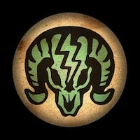

En estas entregas hay poderes especiales llamados plásmidos , hay algunos de accion pasiva que modifican los stats del personaje, pueden ser llevados un maximo de 18 y pueden ser cambiados en cualquier momento de la partida. Hay otros que Son ofensivos y se describiran a continuación , de estos se pueden llevar solo 6 y para su invocacion se depende de la bara de ADAM y consumen cierta cantidad de ella por vez.
| Plásmido | imagen | descripción |
|---|---|---|
| Electrorrayo | Una descarga eléctrica que inmobiliza al enemigo. | |
| Telequinesis | Usa para atraer objetos hacia ti, puedes usarlos para cubrirte, suelta para lanzarlos al rival. | |
| Incineración | Incendia a los enemigos por cierto tiempo. | |
| Trampa ciclon | |
arroja por los aires a quien pise la trampa. |
| Señuelo | Crea un dummie que distrae al rival, solo en Bioshock 2. | |
| Hipnotizar | El enemigo cambia de bando | |
| Nube de insectos | Llama una nube de abejas pata atacar y aturdir al enemigo. | |
| Espia | Permite al usuario proyectar un "fantasma" con la forma de su cuerpo que puede controlar. | |
| Diana de seguridad | Marca a un enemigo causando que todos los dispositivos de seguridad cercanos lo ataquen. | |
| Ráfaga invernal | Congela temporalmente el objetivo, lo que permite hacerlo añicos. | |
| Enfurecer | El enemigo comienza a atacar a aliados y enemigos, solo Bioshock 1 | |
| LLamar a Eleonor | Invoca a eleonor, Solo Bioshock2 |
En esta entrega los plásmidos pasivos son replazados por trajes que dan bonificaciones y habilidades extra, y vis vigorizadores remplazan a los plasmidos ofensivos.
| Vigorizador | imagen | descripción |
|---|---|---|
| Jinete electrico | Una descarga eléctrica que inmobiliza al enemigo. | |
| Posesión | El enemigo cambia de bando, si es muy debil se suicida al terminar el efecto. | |
| Tirón de fondo | Empuja al enemigo lejos. | |
| Cuervos asesinos | Invoc una nube de cuervos que inmovilizan y dañan al enemigo. | |
| Devuelvase al remitente | Escudo que Refleja parte del daño del enemigo y absorbe las municiones que lo golpean. | |
| Beso del diablo | Crea una granada de lava o mina que daña al enemigo. | |
| Carga |  | Arremete contra el enemigo y queda a distancia de cuerpo a cuerpo. |
| Caballo salvaje | Pone a flotar a todos los enemigos en linea recta por un cierto tiempo. |